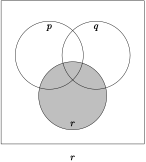

One way to visualize operations on propositions is to use a Venn diagram. Although Venn diagrams are more commonly used with sets, there are many commonalities between the operations on sets and on logical propositions. The Venn diagram for a single logical proposition \(p\) is shown below.
In this diagram, the rectangle stands for the universe, while the circle denotes the logical proposition \(p\text{.}\) We then shade in regions of the diagram to indicate the regions of interest. For example, when we want to indicate the proposition \(p\text{,}\) we shade the inside of the circle, as shown in the left diagram. If instead we want to show the proposition \(\sim\!{p}\text{,}\) we shade outside of the circle, as in the diagram on the right.
Figure2.2.1.Shading for \(p\)
Figure2.2.2.Shading for \(\sim\!{p}\)
Subsection2.2.2Venn Diagrams with Two Propositions
Venn diagrams with only one proposition don’t generally contain much information, as it’s usually pretty easy to visualize what \(p\) and \(\sim\!{p}\) mean when you have only the one proposition. It gets more interesting when you have propositions \(p\) and \(q\) in the same diagram, as you can see in the next figure.
Let’s try doing some shading to represent operations on the propositions \(p\) and \(q\text{.}\) To begin with, let’s examine the shading for \(p\) as shown in Figure 2.2.3. It looks very similar to the shading for the one-proposition diagram, but you should notice that in order to shade in all of \(p\text{,}\)two regions have been shaded in: the crescent-moon shaped part which represent the part of \(p\) that does not overlap with \(q\) and the lozenge-shaped part which represents the part of \(p\) that does overlap with \(q\text{.}\) Similarly, \(q\) is shown in Figure 2.2.4.
Figure2.2.3.Shading for \(p\)
Figure2.2.4.Shading for \(q\)
To represent compound propositions using a Venn diagram, it is helpful first to consider the basic regions of the diagram. In the figure below, the four basic regions are numbered 1 through 4:
Figure2.2.5.Basic regions of a two-proposition Venn diagram.
For example, if you wished to show the Venn diagram for \(p{\vee} q\text{,}\) recall that or means one or the other or both. Looking at Figure 2.2.3 and Figure 2.2.4, we see that we should shade regions 1, 2, and 3:
Figure2.2.6.Venn diagram for the compound statement \(p{\vee} q\)
To show the diagram for \(p{\wedge} q\text{,}\) shade the basic regions that are shaded in both of Figure 2.2.3 and Figure 2.2.4. This means that you would shade only region 3:
Figure2.2.7.Venn diagram for the compound statement \(p{\wedge} q\)
Subsection2.2.3More Complications
Suppose you wished to create a Venn diagram representing \(\sim\!{p}\,{\wedge} q\text{.}\) One way to do this is by constructing the diagram for \(\sim\!{p}\) and the diagram for \(q\text{,}\) and then consider conjunction. Let’s call this the visual step-by-step method.
Here are the diagrams for \(\sim\!{p}\) and for \(q\text{:}\)
Figure2.2.8.Venn diagram for \(\sim\!{p}\)
Figure2.2.9.Shading for \(q\)
Now form the conjunction of the two diagrams by shading only the regions that are shaded in both of the figures:
Figure2.2.10.Venn diagram for \(\sim\!{p}{\wedge} q\)
Another way to do this is to list the basic regions associated with each of the statements appearing in the compound statement, and from them determine which basic regions are associated with the compound statement itself. Referring to Figure 2.2.5, we see that
\(\sim\!{p}\) is associated with regions 2 and 4
\(q\) is associated with regions 2 and 3
The conjunction of these two statements involves the basic region(s) that are common to both of the statements. In this case, only basic region 2 is common. This leads to Figure 2.2.10.
To find \(\sim\!{p}{\vee} q\) using the visual step-by-step method, you’d take the diagrams in Figure 2.2.8 and Figure 2.2.9 and then shade the regions that are shaded in at least one of those two diagrams. Alternatively, you can list the basic regions associated with each of the diagrams and then identify the basic regions that appear in at least one of the two lists. Referring to the enumerations given earlier, we see that regions 2, 3, and 4 appear on those lists (either on one or the other or both). So those are the regions that are shaded. Either way, the result is as follows:
Figure2.2.11.Venn diagram for the compound statement \(\sim\!{p}{\vee} q\)
Using the visual step-by-step method, first draw the diagrams for \(\sim\!{p}\) and for \(\sim\!{q}\text{.}\) The diagram for \(\sim\!{p}\) is in Figure 2.2.8, and here is the diagram for \(\sim\!{q}\text{:}\)
Figure2.2.13.Venn diagram for \(\sim\!{q}\)
Now shade the regions that are shaded in at least one of those two diagrams to get the following:
Figure2.2.14.Venn diagram for \(\sim\!{p}\,{\vee}\sim\!{q}\)
Alternatively, we can look at the basic regions:
\(\sim\!{p}\text{:}\) regions 2 and 4
\(\sim\!{q}\text{:}\) regions 1 and 4
We are interested in the inclusive disjunction, so shade any region that appears at least once in those lists: regions 1, 2, and 4. This gives the figure above.
Subsection2.2.4Negation and De Morgan’s Laws
Consider the proposition \(\sim\!(p {\wedge} q)\text{.}\) The brackets indicate that we must find \(p {\wedge} q\) first, and then form the negation. The diagram for \(p {\wedge} q\) is shown in Figure 2.2.7. The diagram for \(\sim\!(p {\wedge} q)\) is obtained by "reversing": shade all previously unshaded regions, and unshade the shaded region. This yields the following:
Figure2.2.15.Venn diagram for \(\sim\!(p {\wedge} q)\)
This is identical to the Venn diagram for \(\sim\!{p}\,{\vee} \sim\!{q}\text{,}\) so we can conclude that the compound statement \(\sim\!{p}\,{\vee} \sim\!{q}\) is equivalent to the compound statement \(\sim\!(p {\wedge} q)\text{.}\) Note that the particular nature of statements \(p\) and \(q\) do not affect this equivalence. Similarly, it can be shown that \(\sim\!{p}\,{\wedge}\sim\!{q}\) is equivalent to \(\sim\!(p{\vee} q)\text{.}\) Together, these two assertions of equivalence are known as De Morgan’s Laws:
where the symbol \(\Leftrightarrow\) is to be read as "is logically equivalent to".
Subsection2.2.5Venn Diagrams with Three Propositions
We can construct Venn diagrams for compound statements containing three propositions:
Notice that there is a circle for each statement, and that there are regions where some or all of the circles overlap. To find out how to shade the diagram for compound statements such as \((p {\vee} q) {\wedge} r\text{,}\) use either the visual step-by-step method, or the method of enumerating basic regions.
Here are the diagrams for each of \(p\text{,}\)\(q\text{,}\) and \(r\text{:}\)

Then \(p{\vee} q\) gives
Now form the intersection of this with the diagram for \(r\text{:}\)
Figure2.2.17.\((p{\vee} q){\wedge} r\)
Here is an enumeration of the basic regions. It doesn’t really matter how you assign labels to the regions, as long as you are consistent in the analysis you perform using the enumeration.
Figure2.2.18.Basic regions in a three-proposition Venn diagram
Using the enumeration method, we see that
\(p\) consists of regions 1, 4, 5, and 7
\(q\) consists of 2, 4, 6, and 7
\(r\) consists of 3, 5, 6, and 7
Therefore, \(p{\vee} q\) consists of regions 1, 2, 4, 5, 6, and 7 since these regions appear in at least one of the two lists of regions for \(p\) and \(q\text{.}\)
Therefore, \((p{\vee} q){\wedge} r\) consists of regions 5, 6, and 7 because those regions appear on the lists for both\(r\) and \(p{\vee} q\text{.}\)
Two other important cases are shown below. Note that the captions are indicated without brackets because
\begin{equation*}
(p{\vee} q){\vee} r=p{\vee}(q{\vee} r)=p{\vee} q{\vee} r
\end{equation*}
and
\begin{equation*}
(p{\wedge} q){\wedge} r=p{\wedge}(q{\wedge} r)=p{\wedge} q{\wedge} r
\end{equation*}
Exercises2.2.6Exercises
Exercise Group.
Draw Venn diagrams using two propositions \(p\) and \(q\text{,}\) shading in the appropriate regions for the following situations.
1.
\(\ p{\vee} q\)
2.
\(\ p{\wedge} \sim\!{q}\)
3.
\(\ \sim\!{p}{\wedge} \sim\!{q}\)
4.
\(\ \sim\!(p{\wedge} \sim\!{q})\) (Compare with #2.)
5.
\(\ \sim\!(p{\vee} q)\)
6.
\(\ p{\wedge}(\sim\!{p}{\vee} q)\)
7.
\(\ p{\vee}(p{\wedge} q)\)
Exercise Group.
Draw Venn diagrams using three propositions \(p\text{,}\)\(q\text{,}\) and \(r\text{,}\) shading in the appropriate regions for the following situations.